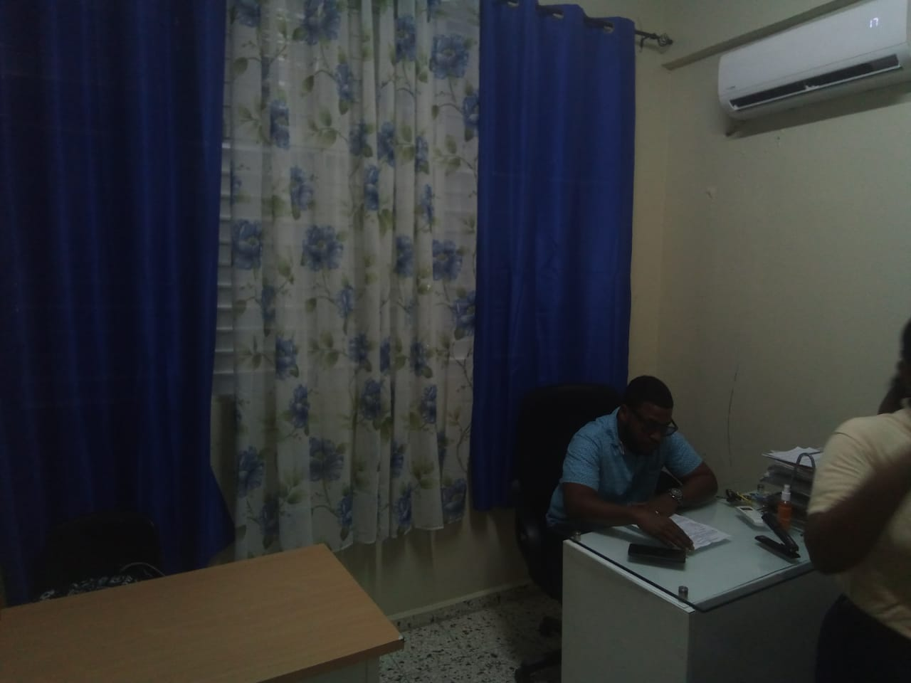
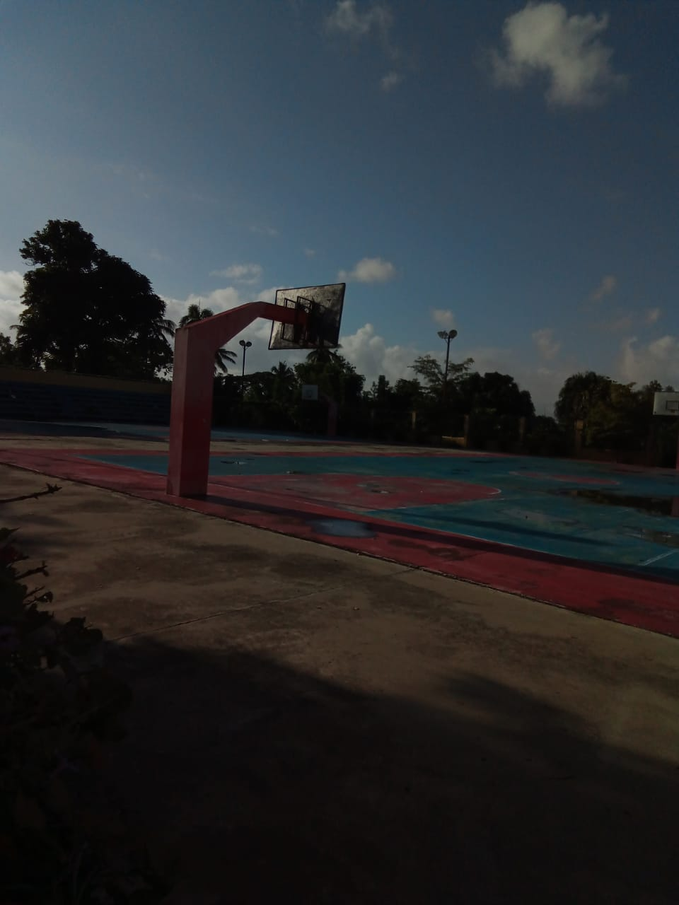

Áreas del Politécnico P.A.F.B

SubDireccion

Laboratorio1 INF

Laboratorio2 INF

Área Deportiva
Departamento de Coordinación y Registro. Aquí se registran y verifican los historiales de los estudiantes, como nombres, apellidos y fechas de nacimiento. También se utiliza la plataforma SIGERD del Ministerio de Educación y se gestionan los registros de los docentes y la documentación del centro.
Coordinador administrativo. Sus funciones son dar seguimiento a la directora en situaciones económicas, supervisar la comida del comedor, participar en la elaboración del POA y proporcionar apoyo económico.
Se encarga de organizar y mantener los proyectos educativos y pedagógicos, además de supervisar el trabajo de los docentes.
Encargado de la formación humana y la disciplina del centro educativo.
Se encarga de impartir prácticas de química y ampliar las actividades de los estudiantes.
Área de certificaciones de estudios, récord de notas, actas de calificaciones, plataforma del ministerio y expedientes.
Imparte prácticas de los módulos utilizando el PDI, que integra la teoría con la práctica para facilitar el aprendizaje.
Encargado del acondicionamiento físico basado en el entrenamiento.
Recepcionista de la dirección. Atiende llamadas y gestiones administrativas.
Se encarga de vender alimentos adecuados a los estudiantes.
Su función es asegurar que los estudiantes entren y no salgan del centro sin autorización.
Atiende las necesidades capilares, estéticas e imagen personal.
María Reyes. Se encarga de preparar clases y organizar tareas.
Se encarga del bienestar de los estudiantes, su desarrollo conductual y el apoyo a las familias.
SubDireccion
Laboratorio1 INF
Laboratorio2 INF
Área Deportiva
Esta página web fue creada por los estudiantes de 4to A INF: